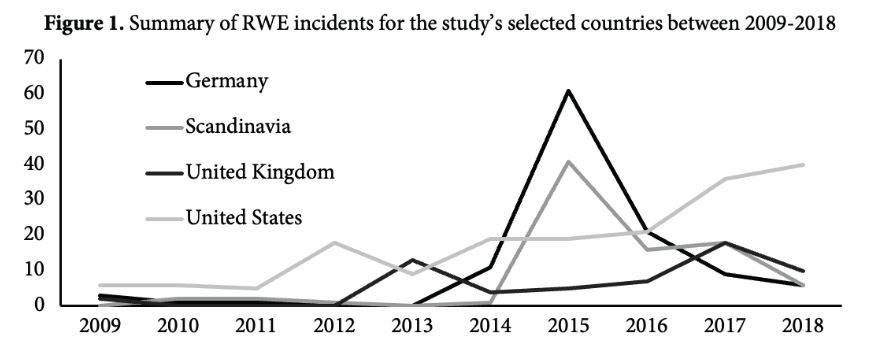
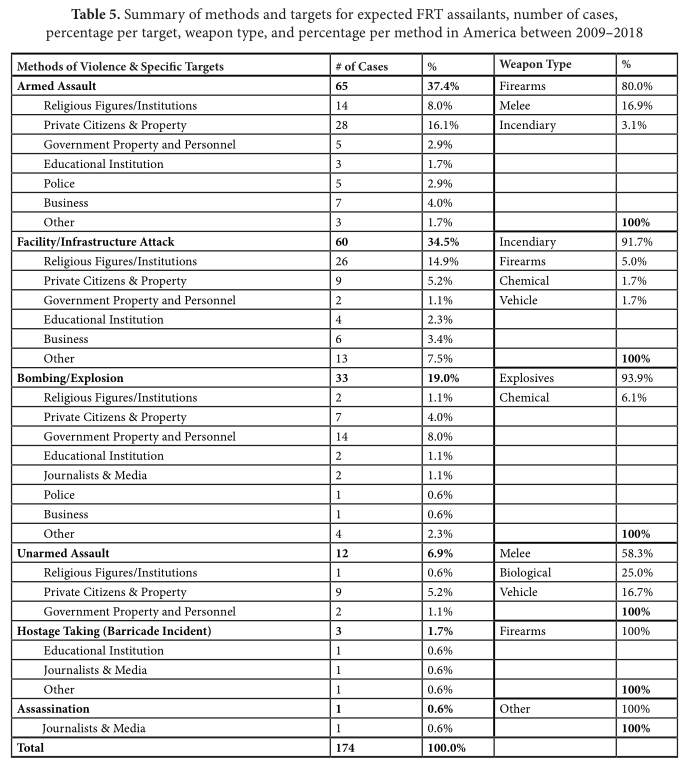
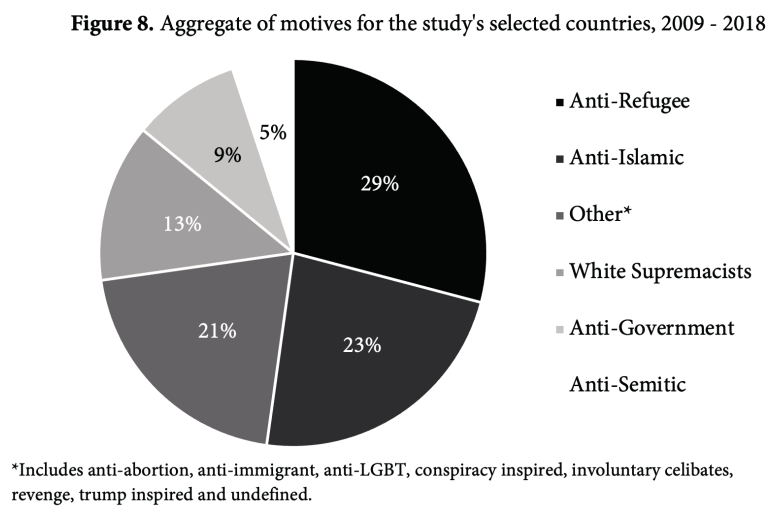
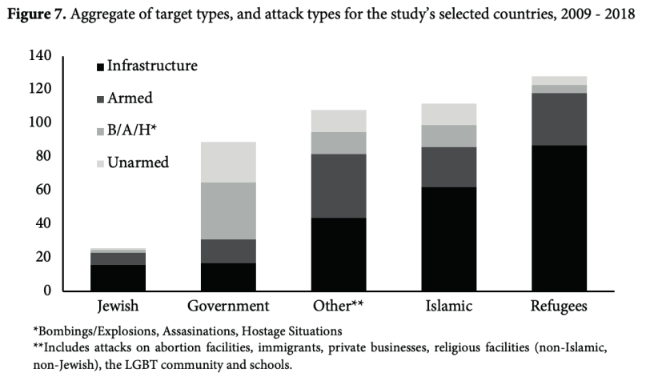

III. How and why do non-state actors use political violence?
The Future of Terrorism?
Justin Leinaweaver (Fall 2025)
Collins (2021) “A New Wave of Terrorism? A Comparative Analysis of the Rise of Far-Right Terrorism”
Evaluate the Framing of the Article
Research question
Key concepts
Connections to the literature
Collins (2021) “A New Wave of Terrorism? A Comparative Analysis of the Rise of Far-Right Terrorism”
Evaluate the Model: Rapoport’s Modern Waves of Terrorism Theory
Kaplan and Costa (2014): The characteristics of fifth-wave ethnoterrorism
Collins (2021) “A New Wave of Terrorism? A Comparative Analysis of the Rise of Far-Right Terrorism”
Research Design
Collins (2021) “A New Wave of Terrorism? A Comparative Analysis of the Rise of Far-Right Terrorism”
Collins (2021) “A New Wave of Terrorism? A Comparative Analysis of the Rise of Far-Right Terrorism”
FRT: A distinct “type” and “prompting cause”?
What does Collins conclude?
Are you convinced by it? Why or why not?
Collins (2021)
Does FRT have a distinct “type”?

Collins (2021) “A New Wave of Terrorism? A Comparative Analysis of the Rise of Far-Right Terrorism”
Collins (2021) “A New Wave of Terrorism? A Comparative Analysis of the Rise of Far-Right Terrorism”
Explore the data and codebook for the Profiles of Individual Radicalization in the United States (PIRUS) Dataset